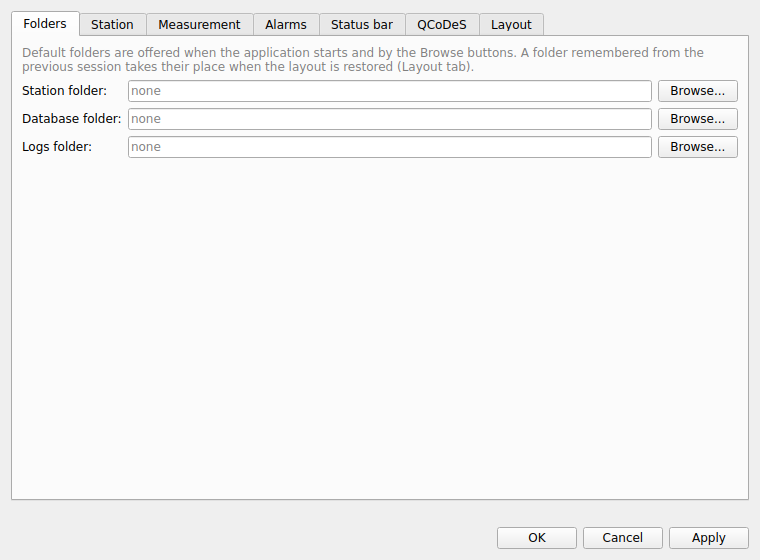
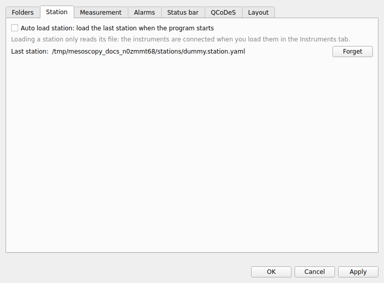
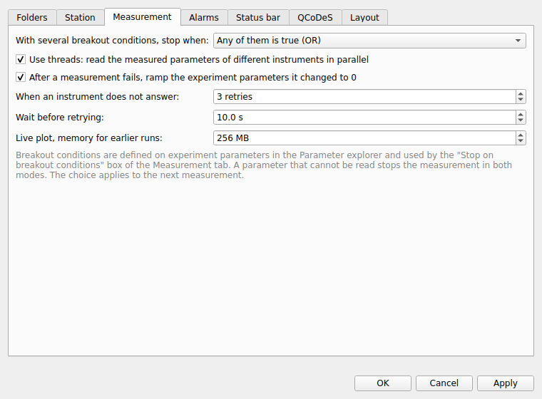
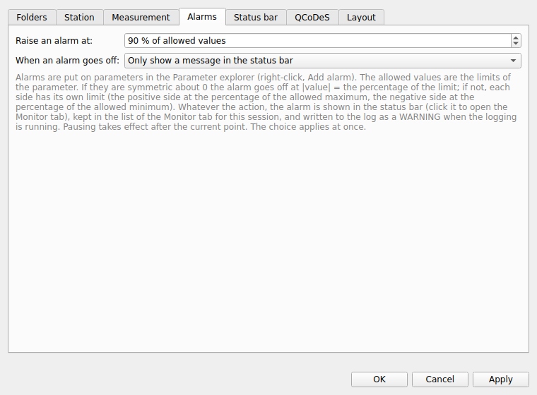
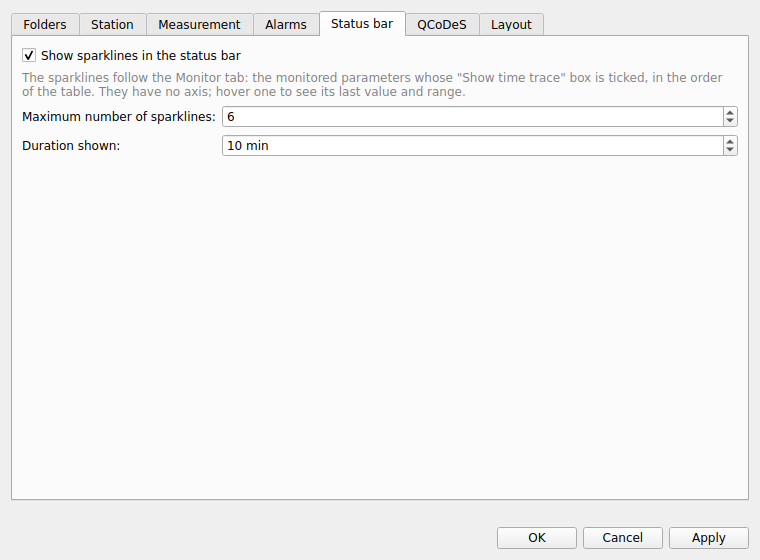
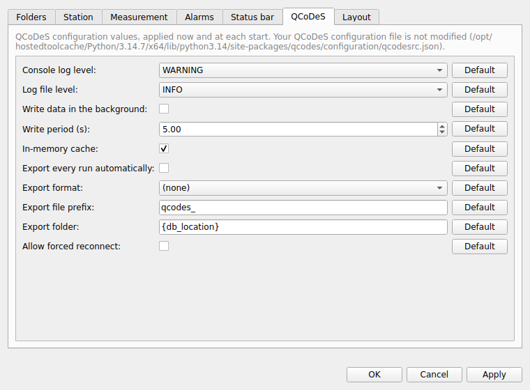
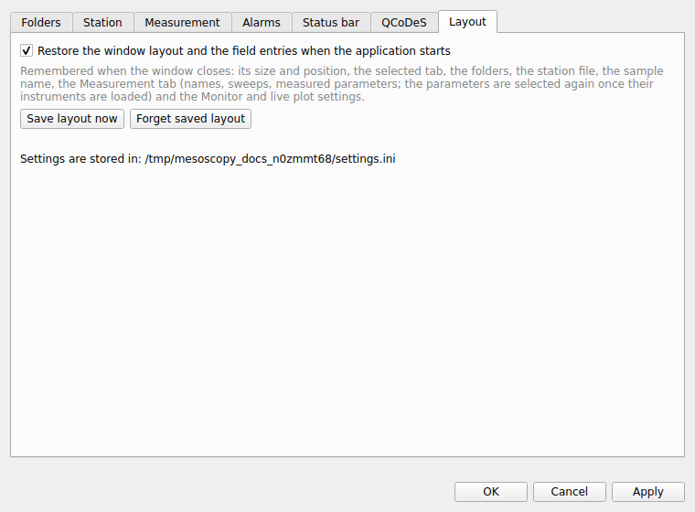
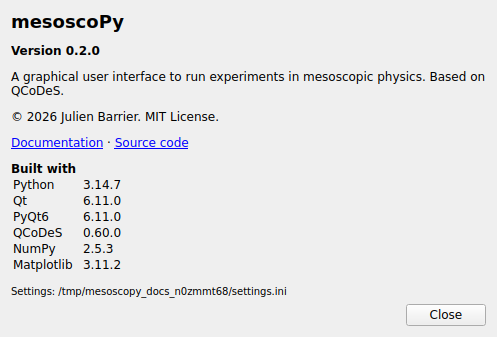

Settings and About
The options that apply to the whole program are in File ▸ Settings… (on macOS: mesoscoPy ▸ Settings…). Changes are stored with OK or Apply, and nothing changes if you press Cancel. Most of them apply at once; a few apply to the next measurement.
Folders


The default folders for the station files, the databases and the logs. They are offered when the program starts and by the Browse… buttons of the tabs. A folder remembered from the previous session (see Layout) takes their place when the layout is restored.
Station


- Auto load station
Loads the last station file when the program starts. Loading a station only reads its file; the instruments are connected when you load them in the Instruments tab. Forget clears the remembered file.
Measurement


- With several breakout conditions, stop when
Any one of them is true, or all of them are true at the same time. A parameter that cannot be read stops the measurement in both modes. Applies to the next measurement.
- Use threads
Reads the measured parameters of different instruments in parallel (the parameters of one instrument are still read one after the other). It is on by default; a measurement can override it in its advanced settings.
- After a measurement fails, ramp the experiment parameters it changed to 0
On by default. See Safety.
- When an instrument does not answer and Wait before retrying
How many times a measurement retries a read or set that failed because the instrument did not answer, and how long it waits before the first retry (the n-th retry waits n times as long). See Safety.
- Live plot, memory for earlier runs
How much memory (16 MB to 8 GB, 256 MB by default) the live plot may use for the earlier runs it draws faded. The oldest are dropped first. 256 MB is about 150 runs of 100 000 points.
Alarms


- Raise an alarm at
The percentage of the allowed values at which an alarm goes off (90 % by default).
- When an alarm goes off
Only show a message in the status bar, pause the measurement, stop it, or stop it and ramp to 0. See Monitor tab.
Status bar


Whether the sparklines of the monitored parameters are shown in the status bar, how many (1 to 12) and over how many minutes.
QCoDeS


A selection of the QCoDeS configuration values: the log levels, how the data is written (in the background, the write period, the in-memory cache), the automatic export (on or off, format, prefix, folder) and whether a station may be forced to reconnect. They are applied now and at each start. Your QCoDeS configuration file is not modified; the values you change are kept by mesoscoPy. The Default button next to a value goes back to the QCoDeS default.
Layout


- Restore the window layout and the field entries when the application starts
Remembered when the window closes: its size and position, the selected tab, the folders, the station file, the sample name, the Measurement tab (names, sweeps, measured parameters), the queue, the alarms, and the Monitor and live-plot settings. Save layout now saves it at once; Forget saved layout erases it. The page also says where the settings file is.
About
Help ▸ About mesoscoPy (on macOS, in the application menu mesoscoPy ▸ About mesoscoPy) shows the version of the program, its licence, links to this documentation and to the source code, and the versions of Python, Qt, QCoDeS, NumPy and Matplotlib that it runs with. Mention them when you report a problem.

